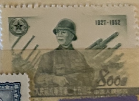
| SOURCE | TITLE| IMAGE MATCH | click to source page |
| eBay | P.R. CHINA 160 - People's Liberation Army 25th Anniversary (pb24624) | eBay |  |
| Xabusiness.com | C17 Scott 159-162 25th Anniv. of Founding ofthe Chinese People's Liberation Army - China Stamps | 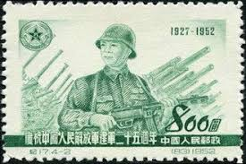 |
| eBay | China 1952 C17, 25th Anniv. of Founding ofthe Chinese People's Liberation Army | eBay |  |
| eBay | China 1942- Mint never hinged stamp (MNH). Military nr.: 3.. (VG) MV-6233 | eBay | 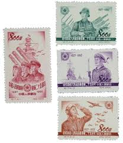 |
| eBay | 1952 C17, 25Th Anniversary of The Founding of The Army Scrawl Ticket No Glue | eBay | 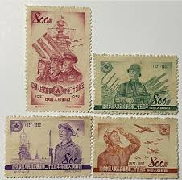 |
| eBay | People's Republic of China Scott #180 Mint No Gum PRC | eBay | 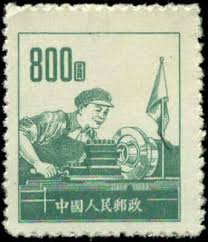 |
| Amazon.com | Amazon.com: Vietnam Stamps - 1959, Sc 109, VN Code # 61, 15th Founding anniv. of Vietnamese People?????s Army, MNH, F-VF : Toys & Games |  |
| eBay | PEOPLE'S REPUBLIC of CHINA 239 - Workers with Flag and Constitution (pb26179) | eBay |  |
| Todocolección | 345254 mnh mongolia 1981 soldado - Buy Antique stamps of Mongolia on todocoleccion | 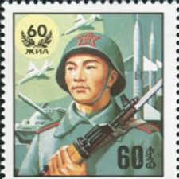 |
| eBay | VIET NAM DEM. REP , 1958 , OFFICIAL , SOLDIER , 50d STAMP , PERF , USED | eBay | 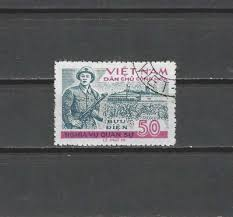 |
| eBay | China, Peoples Rep. of, Scott 159-162 (1952) Mint/Used LH F-VF, CV $8.15 Q | eBay | 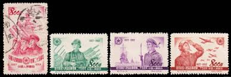 |
| eBay | P.R. CHINA 233 - Joseph Stalin "Soviet Leader" (pb21360) | eBay | 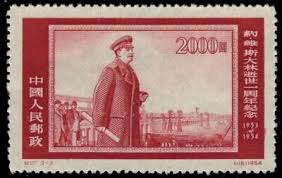 |
| eBay | Vietnam 2007 (3458) Truong Chinh | eBay | 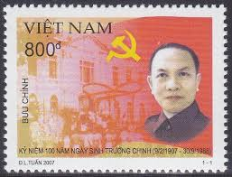 |
| eBay | Vietnam 2007 (3459) Le Duan | eBay | 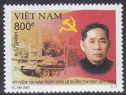 |
| eBay | North Vietnam War Propaganda stamp anti-aircraft unit firing machine gun # 480 | eBay | 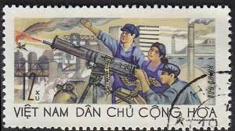 |
| eBay | China 1954 PRC $400 Adoption of Constitution Scott #239 Mint Y409 | eBay | 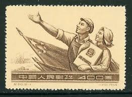 |
| eBay | South Vietnam 1960 (216) Medical | eBay | 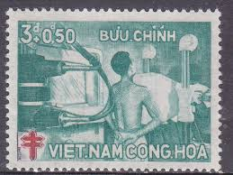 |
| eBay | Australia 1967 Military Cover from Vietnam War +AFPO #01 +Defense Force #26 +RR | eBay | 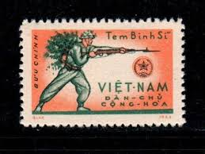 |
| eBay | China Banknote Pick#877g 1962 1 Jiao X VII VI-1721184 Bill Republic Asian Red Mk | eBay | 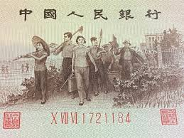 |
| eBay | P.R. OF CHINA 2014-17 COMRADE DENG XIAOPING COMP. SET OF 4 STAMPS IN MINT MNH | eBay | 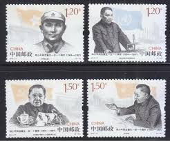 |
| eBay | Vietnam-N 15th Ann People's Army 1959 MNH-3 Euro | eBay | 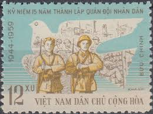 |
| eBay | C17 1952 25th anniversary of the founding of the People's Liberation Army XF | eBay | 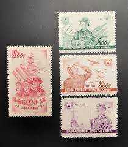 |
| eBay | China Military Red Army Soldier stamp 1955 A-10 | eBay | 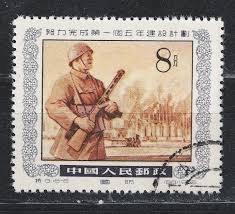 |
| eBay | 1964 North Vietnam Military Stamps Block 4 Rifleman Scott # M8 MNH | eBay | 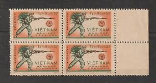 |
| eBay | Vietnam #109 Army Anniversary | eBay | 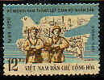 |
| eBay | S41092 VIETNAM 1959 MNH Peoples Army 1V Y&T 179 | eBay | 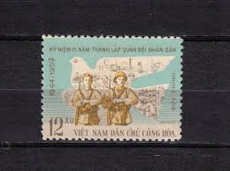 |
| eBay | China C109 MNH stamps 纪109遵义 | eBay | 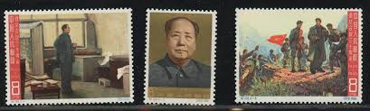 |
| Etsy | Viet Cong Postage Stamps: Rare Vietnam Philately - Etsy | 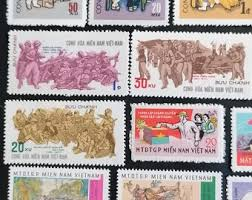 |
| eBay | 1971, VIETNAM, VIET CONG, 10TH ANNIVERSARY OF NFL, SET OF 4, NH, SC. #35-38 | eBay | 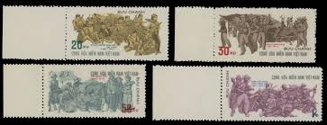 |
| eBay | MTC0717 Vietnam 1980 2v Flag Star Person People Fight | eBay | 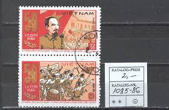 |
| eBay | N.457 -Vietnam- Military Frank | eBay | 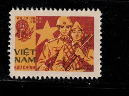 |
| eBay | Vietnam 40th Ann Popular Police 1985 MNH-7 Euro | eBay | 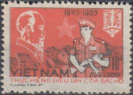 |
| eBay | Postage Stamp of CHINA MNG A29P37F37486 | eBay | 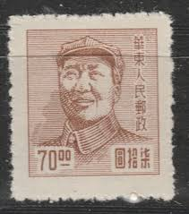 |
| eBay | French Indochina: 1 Piastre ND (1932) Pick 52 PMG Choice Uncirculated 64. | eBay | 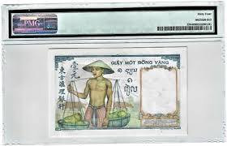 |
| eBay | Viet-Nam Scott #296 VF Unused 1966 3 Piaster Soldier & Workers | eBay | 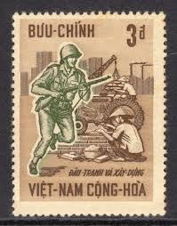 |
| eBay | South Vietnam Sc#296(single frank) FORCES MAIL-KBC 6585 AIRMAIL QUAN-BUU | eBay | 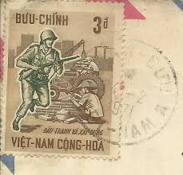 |
| eBay | 4 sets of 3 China stamps J26 1978 Learning from Lei Feng 向雷锋学习 MNH, BLOCK OF 4 | eBay | 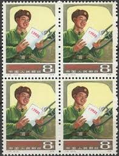 |
| eBay | Vietnam Imperforate 2 sets NH #251-254 and #258-260 | eBay | 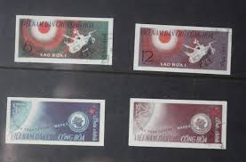 |
| eBay | South Vietnam 10 Dong Lottery 13. 10. 1964 | eBay | 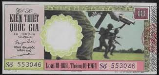 |
| eBay | Vietnam South Blk4 Variety Stamps Extra Color | eBay | 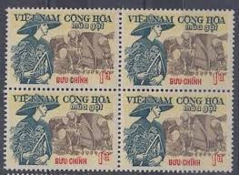 |
| CGB Numismatics | 2 Dong Faux VIETNAM 1958 P.072x 555696 Banknotes | 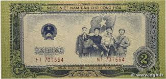 |
| eBay | 1960 North Vietnam Stamps National Day, 15th Anniv. Scott # 132-133 MNH | eBay | 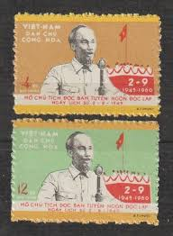 |
| eBay | Rare Chinese stamp Mi:CN-SW 12 Southwest China R! | eBay | 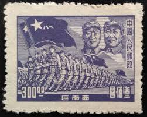 |
| eBay | Vietnam SC 109 NGAI (3edq) | eBay | 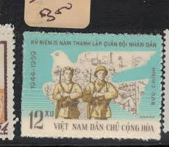 |
| eBay | PRC China Stamps: 1954 First National Congress, Mint Never Hinged | eBay | 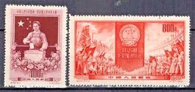 |
| eBay | China 1967 - Used stamp. Mi nr.: 1006. Postaly used. Little fault. (VG) MV-10282 | eBay | 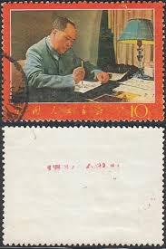 |
| eBay | Russia 1959 Mi.#2266-7 10th anniversary of Chinese Peoples Republic set 2 stamps | eBay | 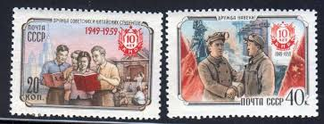 |
| eBay | 1966 N. Vietnam Stamps Victory Dry Season Campaign Scott # 432-434 Cto NH | eBay | 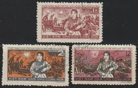 |
| eBay | RUSSIA,USSR:1959 SC#2237-38 Used People's Republic of China, 10th anniv. Z112 | eBay | 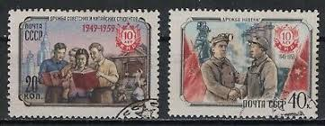 |
| eBay | Viet Nam 3528, MNH. Nguyen Van Ling, 2015. | eBay | 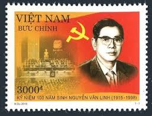 |
| eBay | M4984 VIETNAM 1968 BLOCK OF 25 STAMPS SOUTH VIETNAM - FLAGS - NATIONAL EMBLEMS | eBay | 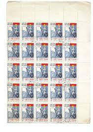 |
| eBay | 1961, VIETNAM, GEOLOGICAL EXPLORATION, COMPLETE SET IN BLOCKS, NH, SC. #166-67 | eBay | 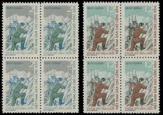 |
| eBay | NLF 08 -Vietnam- Sketches of the Anti-US Struggle For National Salvation | eBay | 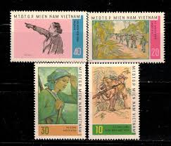 |
| eBay | N.776 -Vietnam- Asian Fierce Birds | eBay |